Juara 1 GEMASTE
Kompetisi Esai Nasional GEMASTE yang diselenggarakan HIMPROTE FT UNNES.
Mahasiswa Teknik Komputer yang tertarik pada pertemuan antara sistem cerdas, komputasi fisik, riset rekayasa, serta penerapan teknologi yang memberi manfaat nyata.
NIM
2405110052
Program Studi
Teknik Komputer
Angkatan
2024
Kesibukan
Mengembangkan proyek engineering dan riset, mengikuti kompetisi ilmiah, public speaking dan mentoring, kegiatan organisasi serta pengabdian, termasuk pengalaman riset di BRIN.
Cita-cita
Berkembang sebagai Mechatronics & Robotics Engineer sekaligus menempuh jalur jangka panjang sebagai dosen dan peneliti.
Bidang Keahlian
Ingin mendalami mekatronika, robotika, instrumentasi, embedded control system, avionik, serta flight control computer hingga tingkat profesional dan riset.
Engineering, riset, pengalaman, dan catatan di tepi garis.
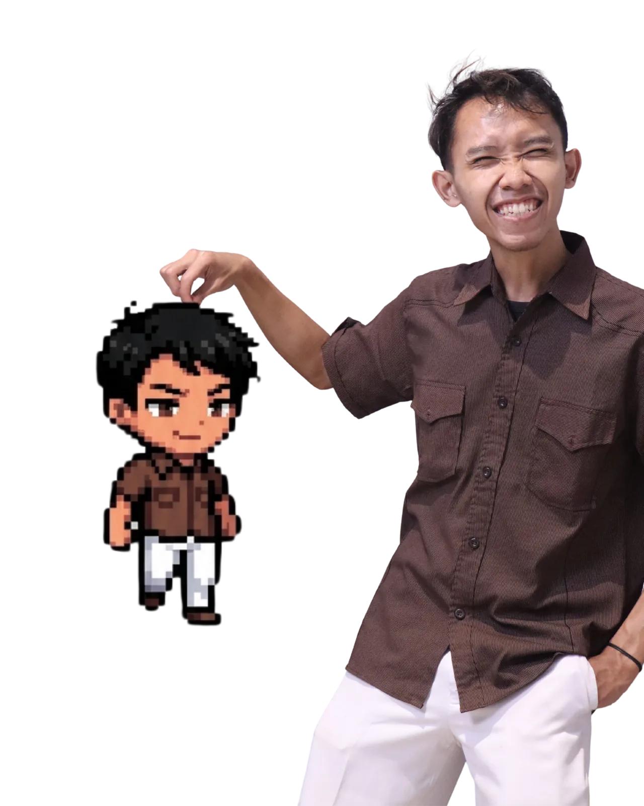
Beberapa kompetisi, riset, internship, proyek teknik, organisasi, dan kegiatan pengembangan yang membentuk perjalanan akademik serta profesional saya.
Kompetisi Esai Nasional GEMASTE yang diselenggarakan HIMPROTE FT UNNES.
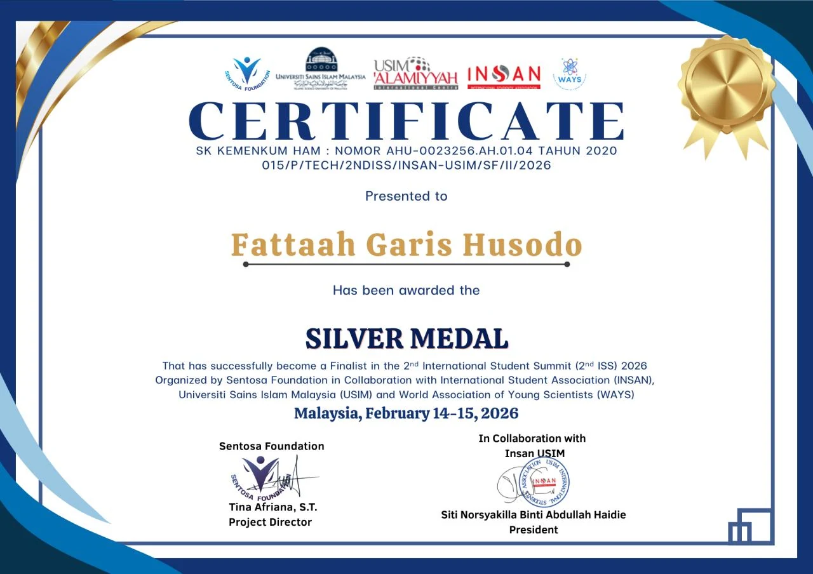
2nd International Student Summit, Sentosa Foundation & Universiti Sains Islam Malaysia, Kuala Lumpur.
2nd International Student Summit, Sentosa Foundation & Universiti Sains Islam Malaysia, Kuala Lumpur.
Piala Dekan 2025, Fakultas Teknik, Universitas Negeri Semarang.
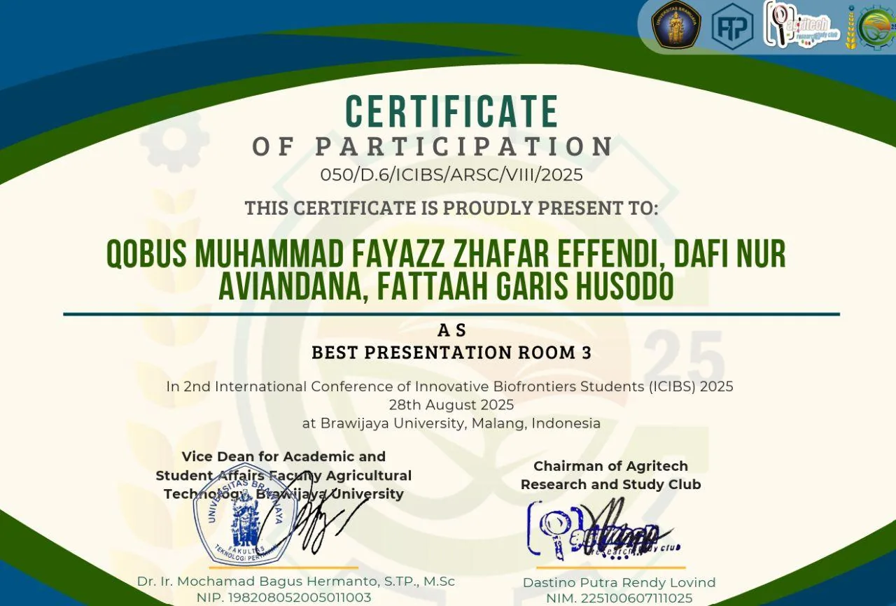
International Conference of Innovative Biofrontiers Students, Universitas Brawijaya.
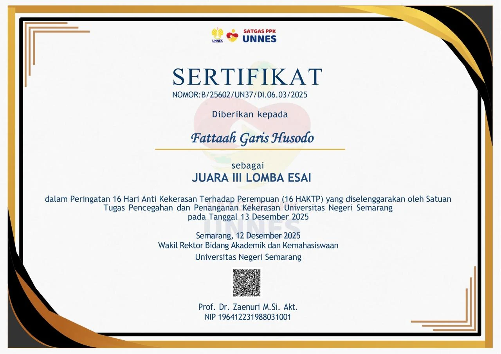
Kompetisi esai nasional oleh Satgas PPK Universitas Negeri Semarang.
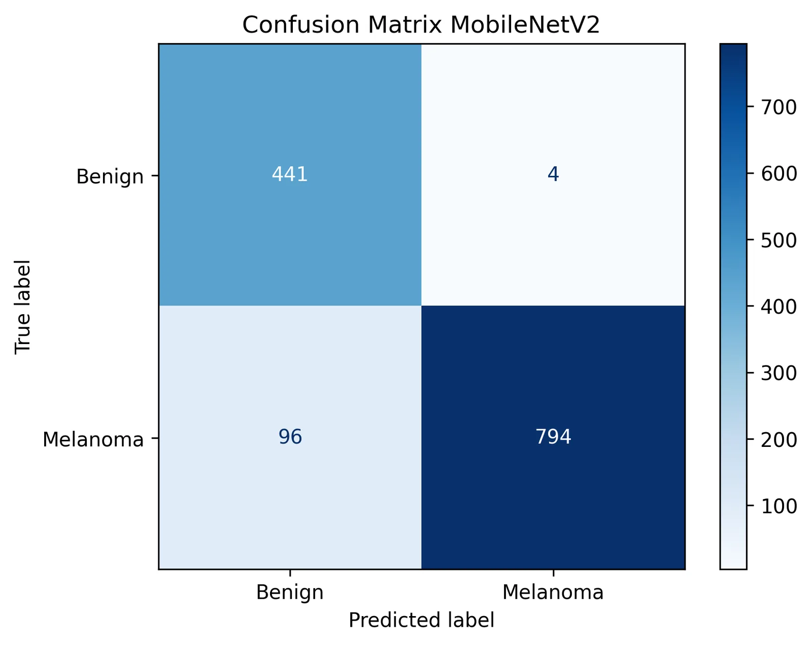
Mengembangkan dan mengevaluasi ResNet50, EfficientNetB3, dan MobileNetV2 untuk klasifikasi citra medis, mencakup preprocessing dataset, transfer learning, fine-tuning, dan analisis performa model.
Mengimplementasikan arsitektur PID–Kalman untuk filtering dan stabilisasi sensor secara real-time, lalu mengintegrasikan Computer Vision dan ESP32 untuk sistem pan-tilt tracking berbasis kontrol PID.
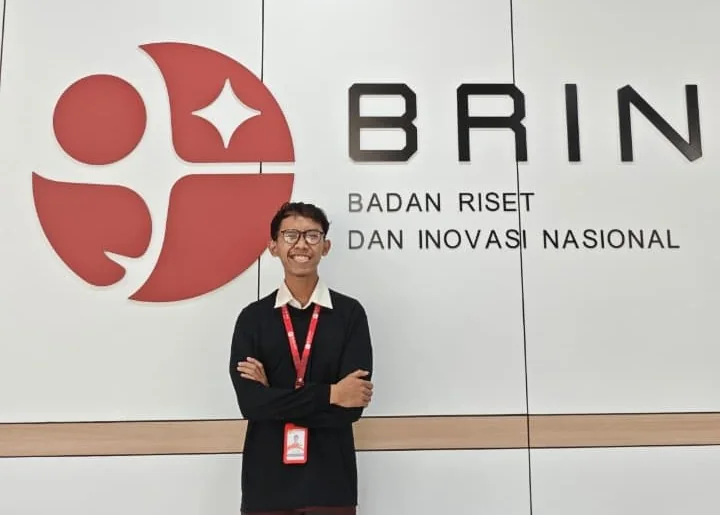
Juli—Agustus 2026
Kawasan Sains dan Teknologi B.J. Habibie, Tangerang Selatan
Mengimplementasikan Quantum Phase Estimation untuk H₂ dan membandingkannya dengan VQE, serta membangun dan menganalisis rangkaian QFT/QFT†, controlled phase rotation, SWAP, Draper/QFT adder, phase estimation, dan algoritma Shor.
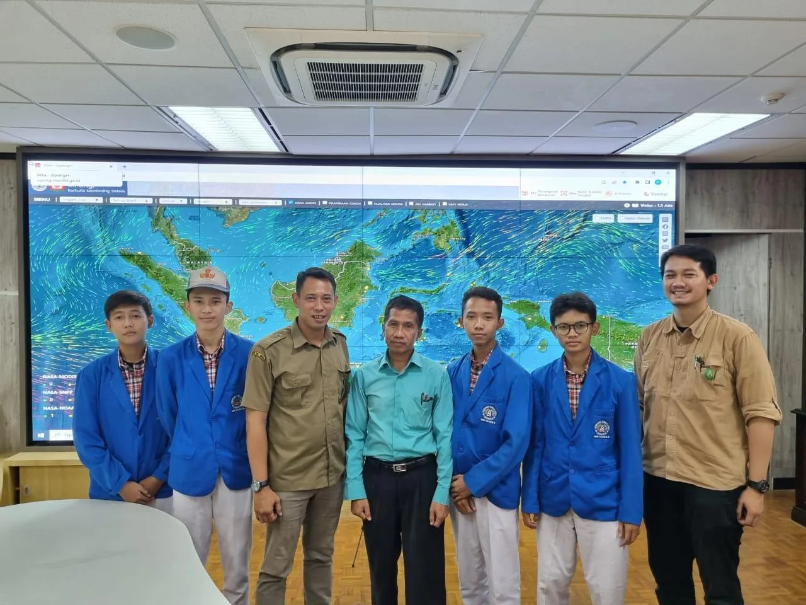
Januari—Maret 2023
Kementerian Lingkungan Hidup & Kehutanan
Menangani instalasi dan pemeliharaan perangkat jaringan serta kabel antarbagian, troubleshooting perangkat lunak jaringan, dan mendukung pemeliharaan website.
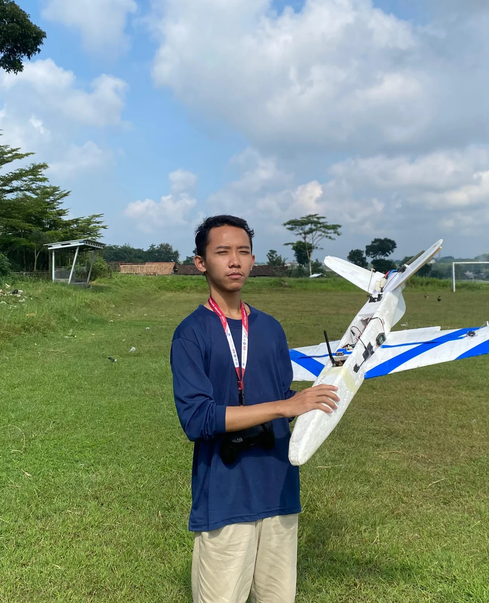
Mengembangkan dan menjaga sistem embedded flight control untuk racing plane serta mendukung integrasi software–hardware.
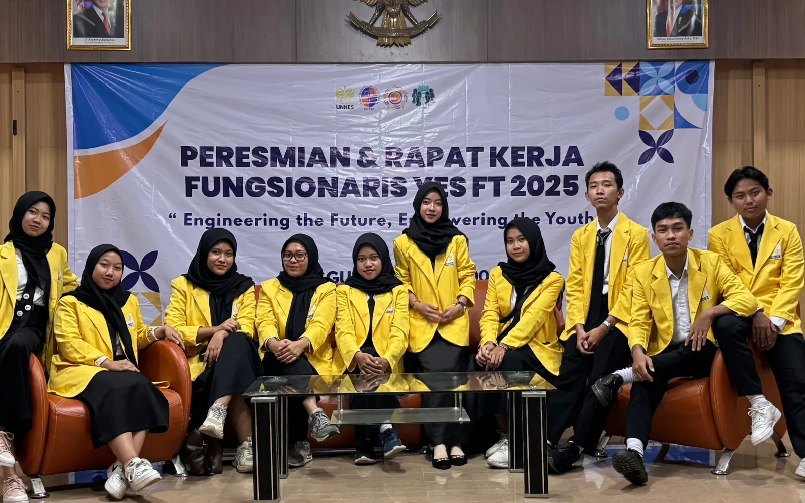
Memimpin program akademik, soft skills, leadership, workshop, mentoring, dan talk show yang menjangkau lebih dari 100 mahasiswa.
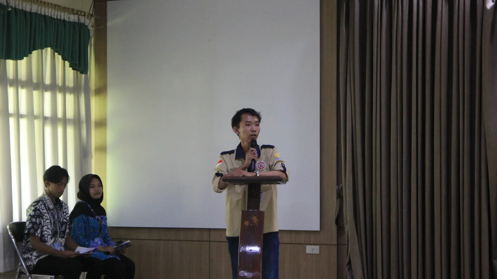
Mengkoordinasikan program pengembangan mahasiswa lintas fakultas yang melibatkan lebih dari 200 peserta.
Berkontribusi dalam sistem kelistrikan kendaraan hemat energi untuk persiapan Kontes Mobil Hemat Energi Indonesia.
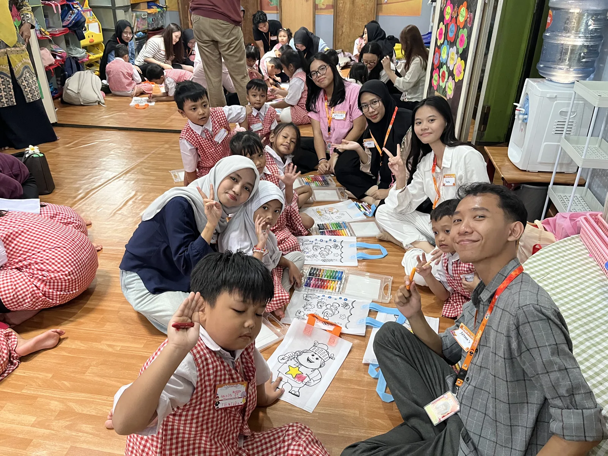
Mengikuti proyek sosial SDG 4 dengan kegiatan pengajaran anak usia dini dan sekolah jalanan di Jakarta.
Terlibat dalam Peduly Jakarta, RoboSchool SUVIFOR, serta mentoring IoT Smart Farming bagi siswa sekolah menengah.
Eksplorasi sistem avionik dan flight control berbasis ESP32 dengan integrasi sensor real-time, estimasi orientasi, dan kendali aktuator. Bagian ini berfokus pada proyek teknis yang saya bangun atau kembangkan secara langsung.
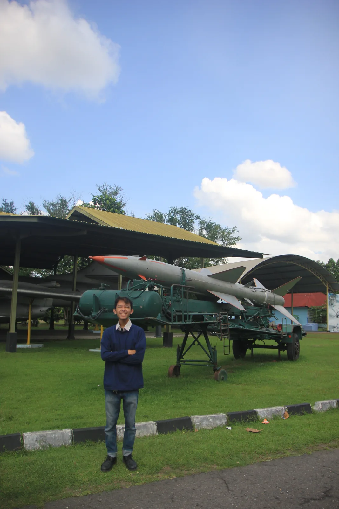
Avionics & Flight Control
Eksplorasi estimasi orientasi, sensor fusion, dan kontrol aktuator untuk sistem roket skala prototipe.
Control System
Rancangan pipeline controller, sensor, kamera, dan mikrokontroler untuk tracking objek secara real-time.
Model Evaluation
Fokus teknis pada evaluasi performa model dan pembacaan kesalahan klasifikasi dari confusion matrix.
Catatan bacaan di luar ruang engineering.

Pramoedya Ananta Toer
Kisah heroisme Minke menghadapi feodalisme dan kolonialisme.
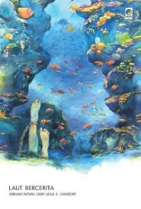
Leila S. Chudori
Catatan kelam perjuangan aktivis pra-reformasi yang penuh emosi.
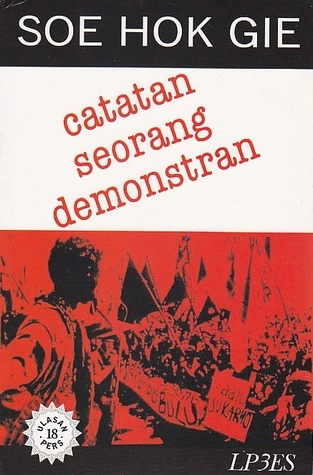
Soe Hok Gie
Buku harian reflektif seorang intelektual muda yang jujur.

Tan Malaka
Memoar legendaris perjuangan dan pelarian politik Tan Malaka antar penjara dunia.
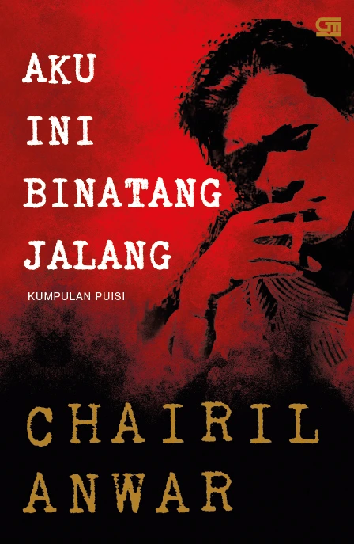
Chairil Anwar
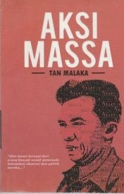
Tan Malaka
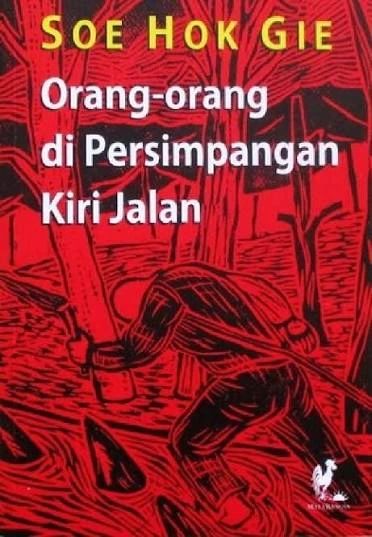
Soe Hok Gie

Maman Suherman

Gina S. Noer
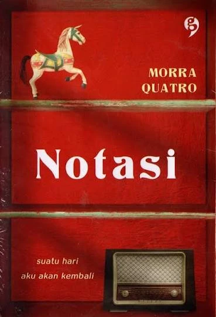
Morra Quatro
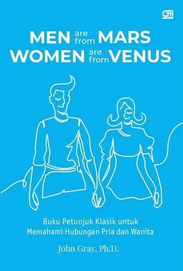
John Gray

Sitor Situmorang
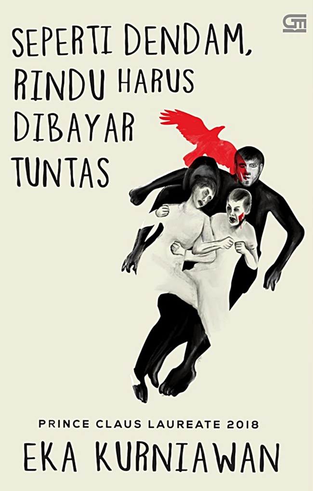
Eka Kurniawan

Nawal El Saadawi

Ahmad Tohari